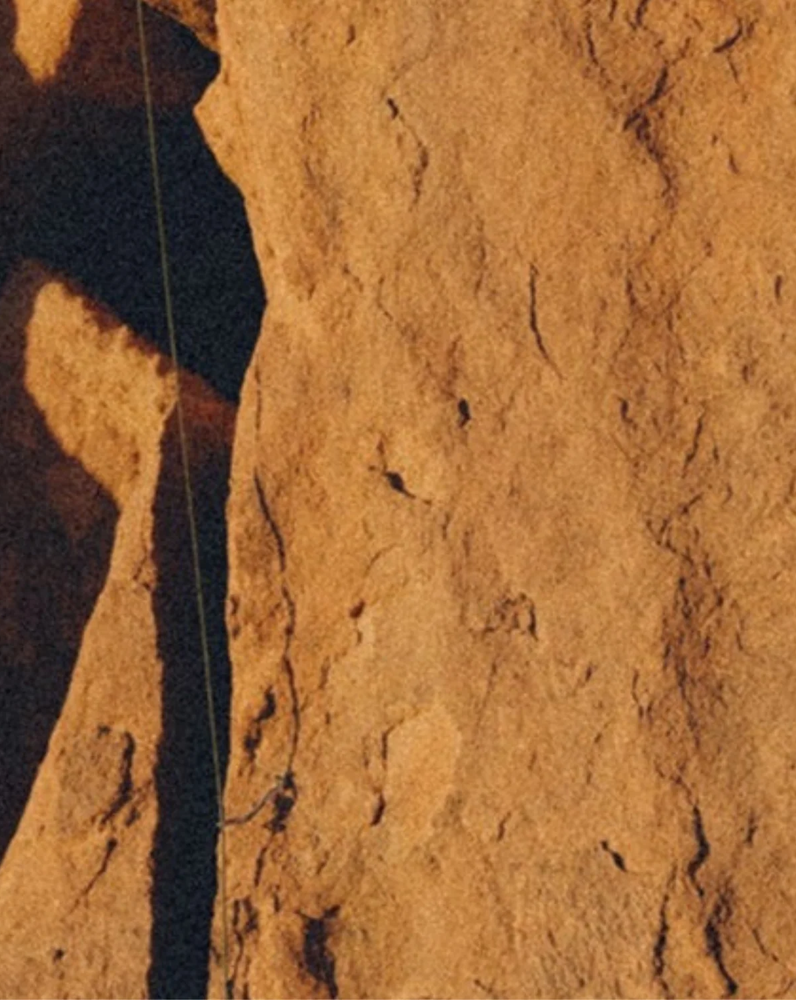
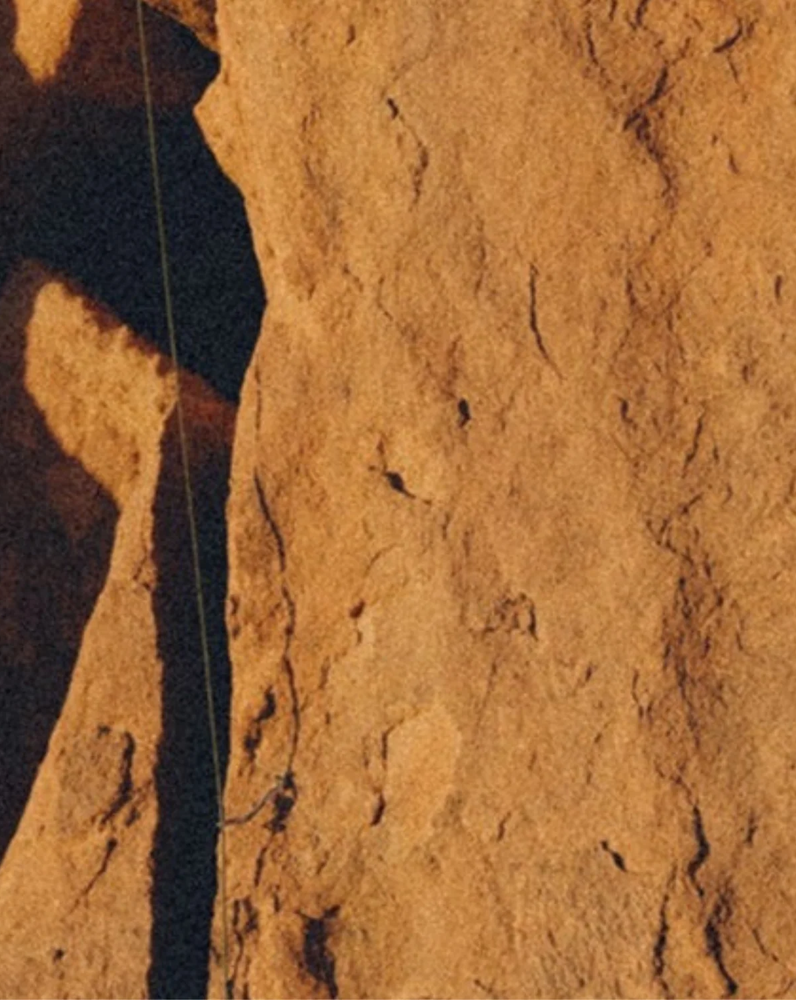

The Original Climbing Pant
WHERE IT ALL BEGAN
The G-Pant is where it all began. Designed in the early 1980s with rock climbing in mind, these trousers quickly became a staple for those who valued movement, durability, and function.
Tough enough for the crag, but comfortable enough for everyday wear, they laid the blueprint for generations of outdoor-ready gear.
SHOP NOW

The Original Climbing Pant
WHERE IT ALL BEGAN
The G-Pant is where it all began. Designed in the early 1980s with rock climbing in mind, these trousers quickly became a staple for those who valued movement, durability, and function.
Tough enough for the crag, but comfortable enough for everyday wear, they laid the blueprint for generations of outdoor-ready gear.
SHOP NOW


 

More Than Just a Climbing Pant
BEYOND YOSEMITE
The G-Pant’s versatility took it beyond the cliffs of Yosemite. By the mid-80s, skaters, surfers, and explorers of all kinds were drawn to its durable construction and effortless style. Before long, Gramicci had found a new audience—one that valued function just as much as form.
From Japan’s streetwear scene to forward-thinking outdoor stores around the world, the G-Pant cemented its place as an icon.